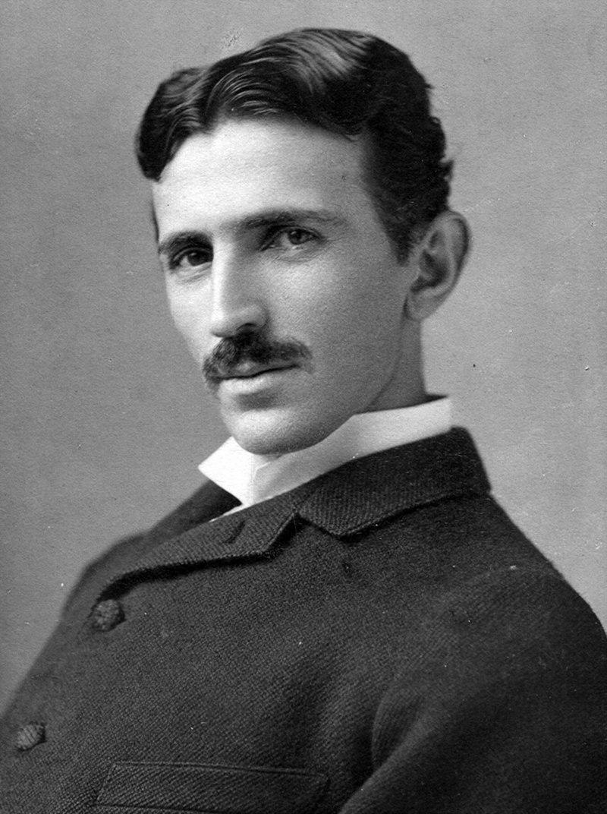

Почта
Никола Тесла

Никола Те́сла (серб. Никола Те́сла, англ. Nikola Tesla; 10 июля 1856, Смилян, Госпич, Австрийская империя — 7 января 1943, Нью-Йорк, Нью-Йорк, США) — американский инженер и учёный-физик, изобретатель в области электротехники и радиотехники. По национальности серб, родился в Австрийской империи, вырос в Австро-Венгрии, в последующие годы в основном работал во Франции и США. В 1891 году получил гражданство США[7].
Список изобретений
Переменный ток
Работая на Вестингауза, запатентовал применение многофазных систем переменного тока. До изобретения асинхронного (индукционного) двигателя переменный ток не находил широкого применения, поскольку не мог использоваться в ранее существовавших электродвигателях.
С 1889 года Никола Тесла приступил к исследованиям токов высокой частоты и высоких напряжений. Изобрёл первые образцы электромеханических генераторов ВЧ (в том числе индукторного типа) и высокочастотный трансформатор (трансформатор Теслы, 1891), создав тем самым предпосылки для развития новой отрасли электротехники — техники ВЧ.
В ходе исследований токов высокой частоты Тесла уделял внимание и вопросам безопасности. Экспериментируя на своём теле, он изучал влияние переменных токов различной частоты и силы на человеческий организм. Многие правила, впервые разработанные Теслой, вошли в современные основы техники безопасности при работе с ВЧ-токами. Он обнаружил, что при частоте тока свыше 700 Гц электрический ток протекает по поверхности тела, не нанося вреда тканям организма. Электротехнические аппараты, разработанные Теслой для медицинских исследований, получили широкое распространение в мире.
Эксперименты с высокочастотными токами большого напряжения привели изобретателя к открытию способа очистки загрязнённых поверхностей. Аналогичное воздействие токов на кожу показало, что таким образом возможно удалять мелкую сыпь, очищать поры и убивать микробов. Данный метод используется в современной электротерапии.
Теория полей
12 октября 1887 года Тесла дал строгое научное описание сути явления вращающегося магнитного поля. 1 мая 1888 года Тесла получил свои основные патенты на изобретение многофазных электрических машин (в том числе асинхронного электродвигателя) и системы передачи электроэнергии посредством многофазного переменного тока. С использованием двухфазной системы, которую он считал наиболее экономичной, в США был пущен ряд промышленных электроустановок, в том числе Ниагарская ГЭС (1895), крупнейшая в те годы[12].
Радиосвязь
В 1891 году на публичной лекции Тесла описал и продемонстрировал принципы радиосвязи.
Тесла одним из первых запатентовал способ надёжного получения токов, которые могут быть использованы в радиосвязи. Патент U.S. Patent 447 920, выданный в США 10 марта 1891 года, описывал «Метод управления дуговыми лампами» («Method of Operating Arc-Lamps»), в котором генератор переменного тока производил высокочастотные (по меркам того времени) колебания тока порядка 10 000 Гц. Запатентованной инновацией стал метод подавления звука, производимого дуговой лампой под воздействием переменного или пульсирующего тока, для чего Тесла придумал использовать частоты, находящиеся за рамками восприятия человеческого слуха. По современной классификации генератор переменного тока работал в интервале очень низких радиочастот.
В 1893 году учёный вплотную занялся вопросами беспроволочной связи и изобрёл мачтовую антенну.